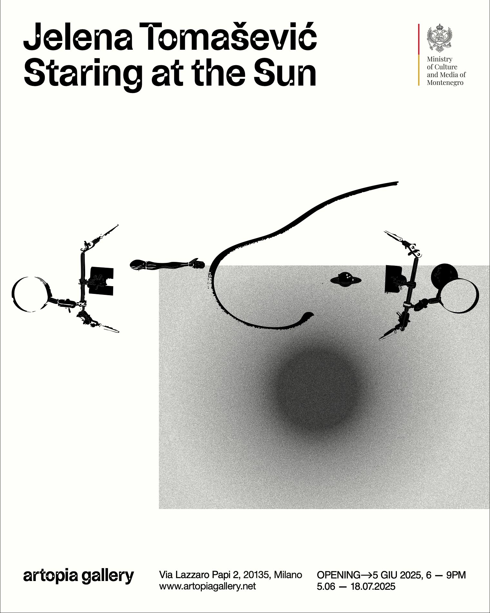
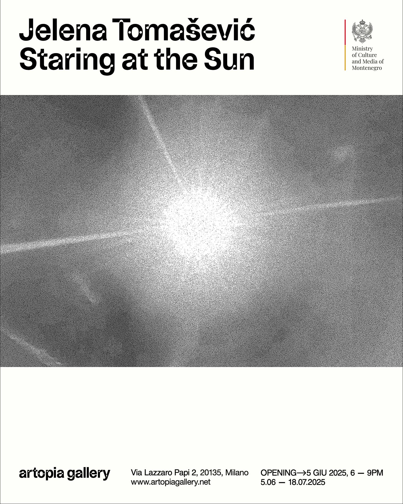
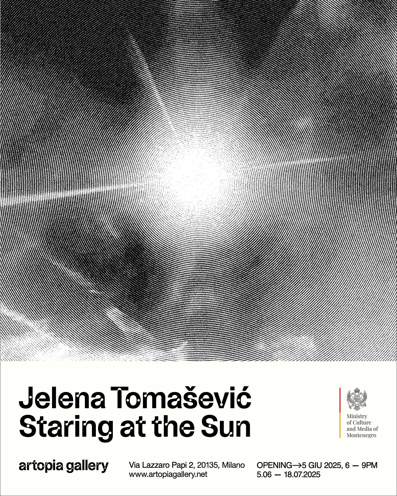

Yelena Tomasevic catalogue
Editorial design
Yelena Tomasevic catalogue (2025).
For Staring at the Sun, Jelena Tomasevié's solo exhibition at Artopia Gallery in Milan, I designed the exhibition leaflet/catalogue and developed its art direction. The exhibition opened on June 5, 2025, and ran until July 18, 2025, at the gallery's space in Via Lazzaro Papi 2. The graphic project was conceived as an extension of the exhibition's visual and conceptual language. The title evokes the physical and emotional experience of looking toward the sun: a moment in which vision is blurred, time seems suspended, and perception shifts into a state between clarity and blindness. This atmosphere guided the design choices, from the use of strong contrasts and large areas of emptiness to the treatment of images as unstable, almost overexposed surfaces. The leaflet/catalogue combines bilingual exhibition texts, interview material, artwork information, and visual documentation into a compact editorial format. The layout works with the relationship between full and empty space, echoing one of the central themes of the exhibition: the possibility that objects, fragments, and images can be recomposed into new meanings. The visual direction uses black, white, and intense yellow tones to create a sharp, almost optical tension, reinforcing the idea of light as both a revealing and disorienting force. The project also included the graphic adaptation of the exhibition's communication materials, maintaining a consistent identity across the printed catalogue and invitation. Through typography, image rhythm, and spatial composition, the design aims to create an editorial object that does not simply docume the show, but becomes part of its atmosphere.




